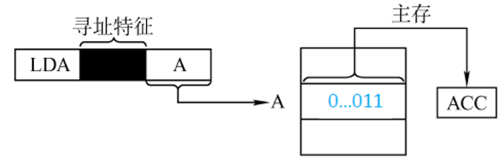
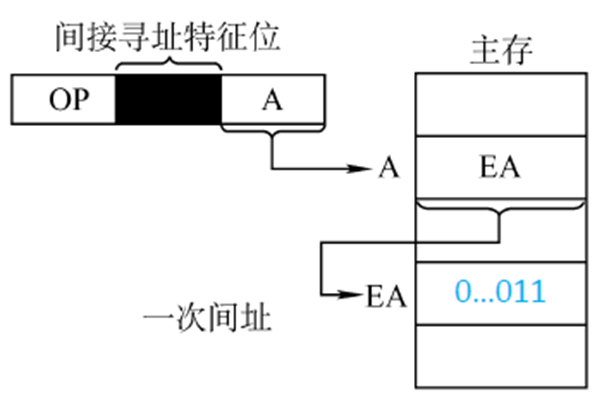
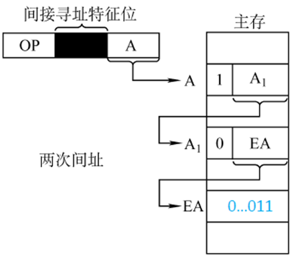
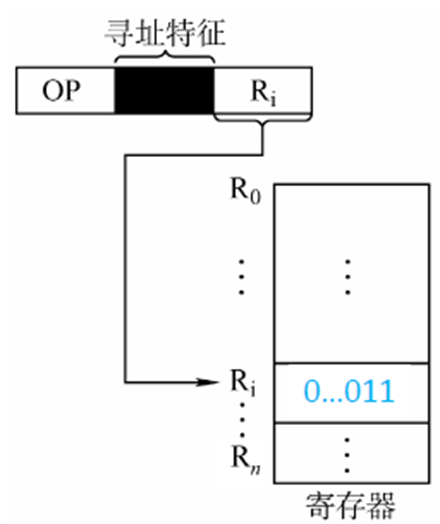
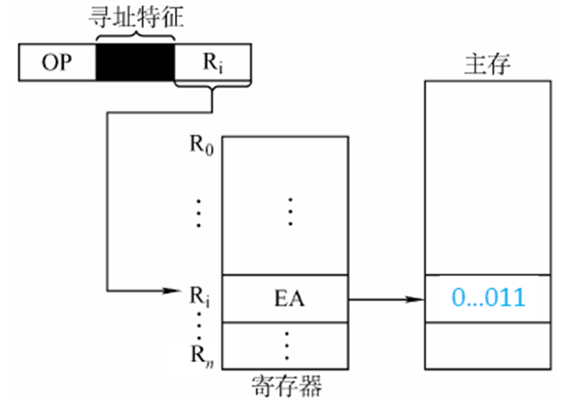
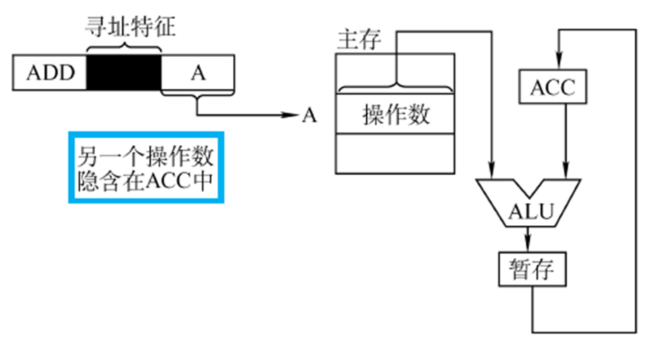
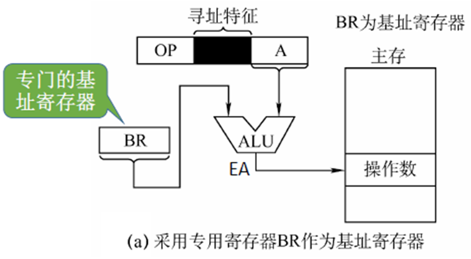
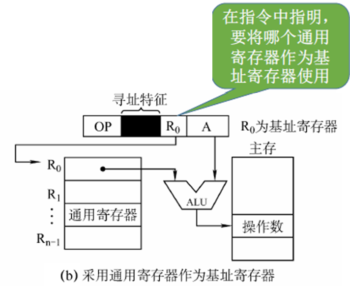
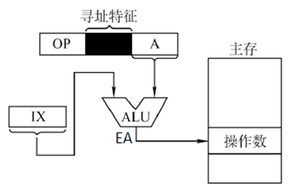
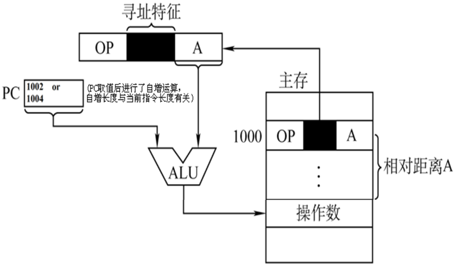

<!doctype html>
<html lang="zh-CN">

<head>
    <meta charset="utf-8">
    <meta name="viewport" content="width=device-width,initial-scale=1">
    <title>COA Beta</title>
    <link
        href="https://fonts.googleapis.com/css2?family=Noto+Sans+SC:wght@300;400;700&family=Fira+Sans:ital,wght@0,400;0,700;1,400&display=swap"
        rel="stylesheet">
    <style>
        :root {
            --bg: #f5f7fb;
            --card: #ffffff;
            --muted: #6b7280;
            --accent: #2563eb;
            --strong: #1e40af;
        }

        * {
            box-sizing: border-box
        }

        u-h1 {
            display: block;
            font-size: 18px;
            margin: 8px 0 10px 0;
            color: var(--accent);
            font-weight: 700;
            letter-spacing: .2px;
            padding-left: 6px;
        }

        u-strong {
            color: var(--strong);
        }

        u-h2 {
            font-size: 16px;
            color: #0b1220;
            margin: 10px 0 6px 0;
            font-weight: 700;
        }

        u-content {
            display: block;
            color: #172033;
            line-height: 1.72;
            font-size: 15px;
            padding: 6px 0 2px 0;
        }

        /* 卡片左侧装饰条，帮助分隔信息区 */
        card {
            position: relative
        }

        card:before {
            content: '';
            position: absolute;
            left: 0;
            top: 0;
            bottom: 0;
            width: 6px;
            background: linear-gradient(180deg, var(--accent), #60a5fa);
            border-top-left-radius: 14px;
            border-bottom-left-radius: 14px
        }


        html,
        body {
            height: 100%;
            margin: 0;
            font-family: 'Noto Sans SC', 'Fira Sans', system-ui, Segoe UI, Roboto, Arial;
            color: #07103a
        }

        body {
            /* 1. 颜色循环：保持你原有的淡灰(#f5f7fb)和淡蓝(#eef2f8)
       设置为 A -> B -> A 的结构，这样滚动到底部时颜色会自然回归，不会断层 */
            background: linear-gradient(180deg,
                    #f5f7fb 0%,
                    #eef2f8 50%,
                    #f5f7fb 100%);

            /* 2. 拉长画布：将背景拉伸到屏幕高度的 3 倍
       这样我们只看到了背景的局部，为滚动移动留出空间 */
            background-size: 100% 300%;

            /* 3. 初始位置 */
            background-position: 50% 0%;

            /* 4. 关键点：添加极短的过渡，让 JS 改变位置时丝般顺滑，没有卡顿感 */
            transition: background-position 0.1s ease-out;

            padding: 28px;
            margin: 0;
            font-family: 'Noto Sans SC', 'Fira Sans', system-ui, Segoe UI, Roboto, Arial;
            color: #07103a;
            min-height: 100vh;
        }

        .container {
            max-width: 1200px;
            margin: 0 auto;
            display: grid;
            grid-template-columns: 260px 1fr;
            gap: 24px;
            align-items: start
        }

        .header {
            display: flex;
            align-items: center;
            gap: 12px;
            padding: 12px 10px
        }

        .brand {
            font-weight: 700;
            font-size: 18px;
            color: var(--accent)
        }

        .toc {
            position: sticky;
            top: 28px;
            padding: 16px;
            border-radius: 12px;
            background: linear-gradient(180deg, rgba(255, 255, 255, 0.85), #fbfdff);
            box-shadow: 0 6px 20px rgba(16, 24, 40, 0.06);
            max-height: 82vh;
            overflow: auto
        }

        .toc h3 {
            margin: 0 0 8px 0;
            font-size: 14px;
            color: #07103a
        }

        .toc ul {
            list-style: none;
            padding: 0;
            margin: 0;
            display: flex;
            flex-direction: column;
            gap: 6px
        }

        .toc a {
            color: var(--accent);
            text-decoration: none;
            font-size: 13px
        }

        .toc a {
            color: var(--accent);
            text-decoration: none;
            font-size: 13px;
            display: block;
            padding: 6px 8px;
            border-radius: 8px
        }

        .toc a:hover {
            background: rgba(37, 99, 235, 0.06)
        }

        .toc a.active {
            background: linear-gradient(90deg, rgba(37, 99, 235, 0.12), rgba(96, 165, 250, 0.06));
            font-weight: 700
        }

        main {
            padding: 0
        }

        card {
            display: block;
            margin: 0 auto 18px auto;
            max-width: 820px;
            border-radius: 14px;
            background: linear-gradient(180deg, var(--card), #fbfdff);
            padding: 18px;
            box-shadow: 0 8px 30px rgba(15, 23, 42, 0.06);
            border: 1px solid rgba(15, 23, 42, 0.03);
            overflow: hidden
        }

        /* 1. 卡片顶部的总标题：加下划线，不仅是变大 */
        card header {
            border-bottom: 1px solid #e2e8f0;
            margin-bottom: 16px;
            padding-bottom: 8px;
        }

        card>card-header u-h1 {
            font-size: 18px;
            color: #1e293b;
            /* 深色 */
            margin: 0;
            padding: 0;
        }

        /* 2. 内容区一级标题：增加呼吸感，使用左侧装饰线 */
        card>u-h1 {
            align-items: center;
            font-size: 17px;
            /* 不需要太大 */
            font-weight: 700;
            color: var(--accent);
            margin: 24px 0 12px 0;
            /* 增加上方间距，区分段落 */
            padding-left: 10px;
            border-left: 4px solid var(--accent);
            /* 左侧竖线 */
            line-height: 1.4;
            background: linear-gradient(90deg, #eff6ff 0%, transparent 100%);
            /*极其淡的背景条 */
            padding-top: 4px;
            padding-bottom: 4px;
            border-radius: 0 4px 4px 0;
        }

        /* 紧接在 header 后的 h1 不需要上方间距 */
        card header+u-h1 {
            margin-top: 10px;
        }

        /* 3. 内容区二级标题：作为小节，颜色变浅，加装饰点 */
        card u-h2 {
            font-size: 15px;
            font-weight: 600;
            color: #475569;
            /* 蓝灰色，降低视觉权重 */
            margin: 16px 0 8px 0;
            display: flex;
            align-items: center;
        }

        card u-h2::before {
            content: '';
            display: inline-block;
            width: 6px;
            height: 6px;
            background-color: #cbd5e1;
            /* 浅灰圆点 */
            border-radius: 50%;
            margin-right: 8px;
        }

        card u-content {
            display: block;
            color: #233;
            line-height: 1.68;
            font-size: 16px;
            padding: 4px 0;
        }

        /* math and code */
        .math {
            background: transparent;
            border-left: 3px solid rgba(37, 99, 235, 0.08);
            padding-left: 12px;
            border-radius: 6px
        }

        pre,
        code {
            font-family: 'Fira Sans', ui-monospace, SFMono-Regular, Menlo, Monaco, 'Courier New', monospace;
            background: #0f172a10;
            padding: 6px;
            border-radius: 6px
        }

        /* images inside cards: 固定等宽（在窄屏下降级为 100%）
           注意：位于 #addr-images 的图片分辨率较小，单独处理见下方规则 */
        card img {
            width: 720px;
            max-width: calc(100% - 40px);
            height: auto;
            border-radius: 10px;
            display: block;
            margin: 12px auto;
            box-shadow: 0 6px 18px rgba(2, 6, 23, 0.06);
            background: #fff;
            padding: 6px;
            transition: transform .22s ease, box-shadow .22s ease;
        }

        card img:hover {
            transform: translateY(-4px);
            box-shadow: 0 14px 30px rgba(2, 6, 23, 0.09)
        }

        card img[src$=".png"],
        card img[src$=".jpg"],
        card img[src$=".jpeg"] {
            background: linear-gradient(180deg, #fff, #fafbff);
            padding: 8px
        }

        /* 小分辨率的脚本加载图（data addressing images）不要被拉伸，保持原始或限制最大宽度 */
        #addr-images img {
            width: auto !important;
            max-width: 360px !important;
            margin: 8px auto !important;
            padding: 4px !important;
            box-shadow: 0 6px 14px rgba(2, 6, 23, 0.04) !important;
            background: transparent !important;
        }

        @media(max-width:980px) {
            .container {
                grid-template-columns: 1fr;
                padding: 0 12px
            }

            .toc {
                display: none
            }
        }
    </style>
</head>

<body>
    <div class="container">
        <aside class="toc" aria-label="目录">
            <div class="header">
                <div class="brand">计组期末</div>
            </div>
            <h3>目录</h3>
            <ul id="toc-list"></ul>
        </aside>
        <main id="content">
            <!-- 原始 card 元素将被脚本移动到此处（不改动 card 内部任何内容） -->
        </main>
    </div>

    <script src="https://cdn.jsdelivr.net/npm/mathjax@3/es5/tex-mml-chtml.js" id="mathjax-script"></script>

    <script>
        const api = 'https://ve-nsfuh87febh98hv.qimo-api.xyz';
        fetch(api + '/baseinfo');

        document.addEventListener('DOMContentLoaded', function () {
            // 将 card 移入主区并生成目录
            var main = document.getElementById('content');
            var toc = document.getElementById('toc-list');
            var cards = Array.from(document.querySelectorAll('card'));
            var headings = [];

            cards.forEach(function (c, idx) {
                main.appendChild(c);
                var h = c.querySelector('card-header u-h1') || c.querySelector('card-header u-tag + u-h1') || c.querySelector('u-h1');
                if (!h) return;
                var text = h.textContent.trim() || ('section-' + (idx + 1));
                var id = text.slice(0, 60).replace(/\s+/g, '-').replace(/[^a-zA-Z0-9\-]/g, '').toLowerCase();
                if (!id) id = 'section-' + idx;
                if (document.getElementById(id)) id = id + '-' + idx;
                h.id = id;

                var li = document.createElement('li');
                var a = document.createElement('a');
                a.href = '#' + id; a.textContent = text; a.dataset.target = id;
                a.addEventListener('click', function (e) { e.preventDefault(); document.getElementById(id).scrollIntoView({ behavior: 'smooth', block: 'start' }); });
                li.appendChild(a); toc.appendChild(li);
                headings.push({ id: id, el: h });
            });

            // 图片优化：懒加载（排除 #addr-images 内的图会保持样式不被拉伸）
            document.querySelectorAll('card img').forEach(function (img) {
                if (img.closest('#addr-images')) return;
                try { img.loading = 'lazy'; img.decoding = 'async'; } catch (e) { }
            });
            document.querySelectorAll('#addr-images img').forEach(function (img) { try { img.loading = 'lazy'; } catch (e) { } });

            // 监听滚动，设置 TOC 当前项（简单的 scroll-spy）
            var tocLinks = Array.from(document.querySelectorAll('#toc-list a'));
            function updateActive() {
                var fromTop = window.scrollY + 120; // 偏移以便看到顶部标题
                var current = null;
                for (var i = 0; i < headings.length; i++) {
                    var rectTop = document.getElementById(headings[i].id).getBoundingClientRect().top + window.scrollY;
                    if (rectTop <= fromTop) current = headings[i].id;
                }
                tocLinks.forEach(function (a) { a.classList.toggle('active', a.dataset.target === current); });
            }
            updateActive();
            window.addEventListener('scroll', throttle(updateActive, 120));

            // 简易节流
            function throttle(fn, wait) {
                var time = Date.now();
                return function () {
                    if ((time + wait - Date.now()) < 0) {
                        fn(); time = Date.now();
                    }
                }
            }

            // 使用 requestAnimationFrame 保证滚动的极致丝滑，不卡顿
            let isTicking = false;
            window.addEventListener('scroll', function () {
                if (!isTicking) {
                    window.requestAnimationFrame(function () {
                        // 1. 计算当前滚动进度 (0 到 1 之间)
                        var scrollTop = window.scrollY;
                        var docHeight = document.body.scrollHeight - window.innerHeight;
                        var scrollPercent = scrollTop / (docHeight || 1); // 防止除以0

                        // 2. 将滚动进度映射到背景位置 (0% 到 100%)
                        // 这里的 100% 对应 CSS 中的 background-size: 300%
                        document.body.style.backgroundPosition = '50% ' + (scrollPercent * 100) + '%';

                        isTicking = false;
                    });
                    isTicking = true;
                }
            });
        });
    </script>
</body>

</html>

<!-- 以下是正文内容，请勿修改 -->
<!-- 1 -->
<card>
    <card-header>
        <u-h1>
            将十进制数转换为 IEEE 754 单精度 (32 位) 浮点数
        </u-h1>
        <u-tag></u-tag>
    </card-header>

    <u-h1>
        \( -0.75 \)
    </u-h1>
    <u-content>
        $$ -0.75 = 0.5 + 0.25 = -0.11\text{B} = -1.1\text{B} \times 2^{-1} $$
        $$
        \begin{align}
        \therefore
        \text{符号位}s &= 1\text{B} \\
        \text{阶码}e &= -1 + 127 = 0111\,1110\text{B} \\
        \text{尾数}f &= 1\text{B} \times 2^{22}
        \end{align}
        $$
        $$
        \begin{align*}
        \therefore \text{结果} &= 1\ 01111110\ 10000000000000000000000\text{B} \\
        &= \text{BF400000}\text{H}
        \end{align*}
        $$
    </u-content>

    <u-h1>
        \( \dfrac{27}{64} \) 和 \( -\dfrac{27}{64} \)
    </u-h1>
    <u-content>
        对于 \( \dfrac{27}{64} \) 有
        $$ \because \frac{27}{64} = \frac{16}{64} + \frac{8}{64} + \frac{2}{64} + \frac{1}{64} $$
        $$
        \begin{align*}
        \therefore
        \frac{27}{64} &= 0.011011\text{B} \\
        &= 1.101100\text{B} \times 2^{-2}
        \end{align*}
        $$
        $$
        \begin{align}
        \therefore
        \text{符号位}s &= 0\text{B} \\
        \text{阶码}e &= -2 + 127 = 0111\,1101\text{B} \\
        \text{尾数}f &= 1011\text{B} \times 2^{19}
        \end{align}
        $$
        $$
        \begin{align*}
        \therefore
        [\frac{27}{64}]_\text{IEEE 754 单精度} &= 0\ 01111101\ 10110000000000000000000\text{B} \\
        &= \text{3ED80000}\text{H} \\
        \end{align*}
        $$
        $$
        \begin{align*}
        \therefore
        [-\frac{27}{64}]_\text{IEEE 754 单精度} &= 1\ 01111101\ 10110000000000000000000\text{B} \\
        &= \text{BED80000}\text{H} \\
        \end{align*}
        $$
    </u-content>
</card>

<!-- 2 -->
<card>
    <card-header>
        <u-h1>
            原码、反码、补码
        </u-h1>
        <u-tag></u-tag>
    </card-header>
</card>

<!-- 3 -->
<card>
    <card-header>
        <u-h1>
            浮点加减运算
        </u-h1>
        <u-tag></u-tag>
    </card-header>

    <u-h1>
        补码加法（双符号位）：求 \( 11\,110011\text{B} + 00\,101001\text{B} \)
    </u-h1>
    <u-content>
        $$
        \begin{align*}
        11\,110011 & \\
        +\ 00\,101001 & \\
        \hline \not1 00\,011100 &
        \end{align*}
        $$
        $$ \therefore \text{原式} = 00\,011100\text{B} $$
    </u-content>

    <u-h1>
        设 \( X = 2^{10\text{B}} \times (-0.110100\text{B}) \)，\( Y = 2^{100\text{B}} \times 0.101001\text{B} \)，求 \(
        (X + Y) \) 和 \( (X - Y) \)
    </u-h1>
    <u-content>
        将任意浮点数 \( x \) 表示为 \( 2^{E_x} \cdot M_x \)，其中 \( E_x \) 为 \( x \) 的阶码，\( M_x \) 为 \( x \) 的尾数，\( x \)
        的符号取决于尾数，有
        $$
        \begin{align}
        E_X &= 10\text{B} \\
        E_Y &= 100\text{B} \\
        M_X &= -0.110100\text{B} \\
        M_Y &= 0.101001\text{B}
        \end{align}
        $$
        将任意数 \( x \) 的有效数字（含影响精度的数字）位数表示为 \( S(x) \)，有
        $$ \max\bigl(S(E_X), S(E_Y)\bigr) + 2 = 5 $$
        $$ \max\bigl(S(M_X), S(M_Y)\bigr) = 6 $$
        故阶码和尾数的双符号位补码的位数分别应为 \( 5 \) 和 \( (6+2) \)，故有
        $$
        \begin{align}
        [E_X]_\text{补} &= 00\,010\text{B} \\
        [E_Y]_\text{补} &= 00\,100\text{B} \\
        [-E_Y]_\text{补} &= 11\,100\text{B} \\
        [f_X]_\text{补} &= [M_X \times 2^6]_\text{补} = 11\,001100\text{B} \\
        [f_Y]_\text{补} &= [M_Y \times 2^6]_\text{补} = 00\,101001\text{B} \\
        [-f_Y]_\text{补} &= 11\,010111\text{B}
        \end{align}
        $$
        <u-h1>对阶</u-h1>
        $$ E_X - E_Y = [E_X]_\text{补} + [-E_Y]_\text{补} = -2 $$
        小阶向大阶看齐，有
        $$ [E_r]_\text{补} = [E_X']_\text{补} = [E_Y]_\text{补} = 00\,100\text{B} $$
        $$ [f_X']_\text{补} = [f_X]_\text{补} \gg 2 = 11\,110011(00)\text{B} $$
        \( (00) \) 是被移出的数
        <u-h1>尾数运算</u-h1>
        $$ [f_{X+Y}]_\text{补} = [f_X']_\text{补} + [f_Y]_\text{补} = 00\,011100(00)\text{B} $$
        $$ [f_{X-Y}]_\text{补} = [f_X']_\text{补} + [-f_Y]_\text{补} = 11\,001010(00)\text{B} $$
        <u-h1>规格化</u-h1>
        \( [f_{X+Y}]_\text{补} \) 的最高数值位与符号位等值，故左规，即
        $$ [E_{X+Y}]_\text{补} = [E_r]_\text{补} - 1 = 00\,011\text{B} $$
        $$ [f_{X+Y}']_\text{补} = [f_{X+Y}]_\text{补} \ll 1 = 00\,111000(0)\text{B} $$
        \( [f_{X-Y}]_\text{补} \) 无需规格化，故
        $$ [E_{X-Y}]_\text{补} = [E_r]_\text{补} = 00\,100\text{B} $$
        <u-h1>舍零入一</u-h1>
        $$ [f_{X+Y}'']_\text{补} = 00\,111000\text{B} $$
        $$ [f_{X-Y}'']_\text{补} = 11\,001010\text{B} $$
        <u-h1>溢出判断</u-h1>
        \( [E_{X+Y}]_\text{补} \) 和 \( [E_{X-Y}]_\text{补} \) 的符号位均为 00 \( \implies \) 无溢出
        <br>综上
        $$ [X+Y]_\text{浮} = [E_{X+Y}]_\text{补}\; [f_{X+Y}'']_\text{补} = 00\,011\ 00\,111000\text{B} $$
        $$ [X-Y]_\text{浮} = [E_{X-Y}]_\text{补}\; [f_{X-Y}'']_\text{补} = 00\,100\ 11\,001010\text{B} $$
        亦即
        $$ X + Y = 2^{011\text{B}} \times 0.111000\text{B} = 7 $$
        $$ X - Y = 2^{100\text{B}} \times (-0.110110\text{B}) = -13.5 $$
    </u-content>
</card>

<!-- 4 -->
<card>
    <card-header>
        <u-h1>
            Cache
        </u-h1>
        <u-tag></u-tag>
    </card-header>

    <u-h1>
        <u-strong>Cache 的命中率与访问效率</u-strong><br>
        CPU 执行一段程序时，Cache 的命中次数为 1920 次，由主存完成的存取次数为 80 次。已知 Cache 的存储周期为 50 ns，主存的存储周期为 200 ns，求
        Cache-主存系统的命中率、平均访问时间和访问效率。
    </u-h1>
    <u-content>
        设程序执行期间，Cache 命中次数为 \( N_c \) 次，主存访问次数为 \( N_m \) 次，则有
        $$ \text{命中率}\ H = \frac{N_c}{N_c + N_m} $$
        设 \( t_c \) 为单次 Cache 命中时的访问时间，\( t_m \) 为单次 Cache 未命中时访问主存的时间，则有
        $$ \text{平均访问时间}\ t_a = H \cdot t_c + (1 - H) \cdot t_m $$
        $$ \text{访问效率}\ E = \frac{t_c}{t_a} $$
        <br>依题意得
        $$
        \begin{align}
        N_c &= 1920 \\
        N_m &= 80 \\
        t_c &= 50\text{ ns} \\
        t_m &= 200\text{ ns}
        \end{align}
        $$
        $$
        \begin{align}
        \therefore H &= 0.96 \\
        t_a &= 56\text{ ns} \\
        E & \approx 89.3\%
        \end{align}
        $$
    </u-content>

    <u-h1> Cache 与主存之间的地址映射方式 </u-h1>
    <u-content>
        <ul>
            <li>直接映射</li>
            <li>全相联映射</li>
            <li>组相联映射</li>
        </ul>
    </u-content>

    <u-h1>
        <u-strong>组相联映射下的主存地址分析</u-strong><br>
        一个组相联映射 Cache 由 64 块构成，每组包含 4 块。主存包含 4096 块，每块由 128 个字组成。试求：<br>
        (1) 一个主存地址有多少位？<br>
        (2) 主存地址字段如何划分？各字段需要多少位？<br>
        (3) 具体说明检索地址为 73F2H 单元内容的过程。
    </u-h1>
    <u-content>
        <u-h1>(1)</u-h1>
        $$ \text{主存块数}\ 4096 = 2^{12} \implies \text{主存块号占 12 位} $$
        $$ \text{每块字数}\ 128 = 2^{7} \implies \text{块内字地址占 7 位} $$
        $$ \therefore \text{主存地址位数} = 12 + 7 = 19 $$
        <u-h1>(2)</u-h1>
        主存地址划分为 3 个字段：主存块标记（8 位）、Cache 组号（4 位）、块内字地址（7 位）<br>
        推导：
        $$
        \begin{align}
        \because\ & \text{主存块号由 Cache 组号和主存块标记组成} \\
        & \text{Cache 分组数} = \frac{64}{4} = 16 = 2^{4} \implies \text{组号占 4 位}
        \end{align}
        $$
        $$ \therefore \text{主存块标记占 } 12 - 4 = 8 \text{ 位} $$
        <u-h1>(3)</u-h1>
        $$
        \begin{align*}
        \text{73F2H} &= 000\,0111\,0011\,1111\,0010\text{B} \\
        &= \underbrace{00001110}_{\text{主存块标记}}\ \underbrace{0111}_{\text{组号}}\
        \underbrace{1110010}_{\text{块内字地址}} \text{B}
        \end{align*}
        $$
        $$
        \begin{align}
        \therefore\ \text{主存块标记} &= \text{0EH} \\
        \text{Cache 组号} &= \text{7H} \\
        \text{块内字地址} &= \text{72H} \\
        \end{align}
        $$
        检索过程：<br>
        首先定位到第 7H 组，然后用 0EH 与组内 4 个块的标记进行比较，如果有相等的，则命中，读出该块的第 72H 个字，并送至 CPU；否则，从主存中读出数据并送至 CPU，同时将该块调入 Cache 中。
    </u-content>

    <u-h1> Cache 的替换策略 </u-h1>
    <u-content>
        <ul>
            <li>先进先出算法 (FIFO)</li>
            <li>最近最少使用算法 (LRU)</li>
            <li>最近不经常使用算法 (LFU)</li>
            <li>随机算法 (Random)</li>
        </ul>
    </u-content>
</card>

<card>
    <card-header>
        <u-h1>
            内存 (主存)
        </u-h1>
        <u-tag></u-tag>
    </card-header>

    <u-h1>MAR、MDR与容量计算</u-h1>
    <u-content>
        存储字长：一个存储单元存储的二进制代码的位数 <br>
        地址总线宽度 \( =\) MAR 位数 \( \xrightarrow{反映} \) 存储单元个数 \( = 2^{\text{MAR 位数}} \) <br>
        数据总线宽度 \( =\) MDR 位数 \( \xrightarrow{反映(通常等于)} \) 存储字长 <br>
        $$
        \begin{align}
        \text{存储容量} &= \text{存储单元个数} \times \text{存储字长} \ \text{bit} \\
        & \stackrel{通常}= 2^{\text{MAR 位数}} \times \text{MDR 位数} \ \text{bit}
        \end{align}
        $$
        MAR 和 MDR 原则上属于内存，但通常位于 CPU 控制器中。
    </u-content>

    <u-h1>容量扩展</u-h1>
    <u-content>
        位扩展：用 \( x \) 片 \( m \text{K} \times n \) 位存储芯片组成 \( m \text{K} \times (n \times x) \) 位存储器 <br>
        字扩展：用 \( x \) 片 \( m \text{K} \times n \) 位存储芯片组成 \( (m \times x) \text{K} \times n \) 位存储器 <br>
        字位同时扩展：用 \( x \) 片 \( m \text{K} \times n \) 位存储芯片组成 \( (m \times y) \text{K} \times (n \times z) \) 位存储器，且有 \(
        x = y \times z \) <br>
        故用 \( x \) 片容量为 \( m \) 的存储芯片正好组成容量为 \( n \) 的存储器，那么 \( x = \dfrac{n}{m} \)
    </u-content>

    <u-h1> 用 \( 128\text{K} \times 8 \) 位存储芯片组成 \( 1024\text{K} \times 32 \) 位存储器，需要几片？如何组成（连线）？ </u-h1>
    <u-content>
        需用 \( \dfrac{1024\text{K} \times 32}{128\text{K} \times 8} = 32 \) 片用字位同时扩展法组成 <br>

        <div class="mxgraph" style="max-width:100%;border:1px solid transparent;"
            data-mxgraph-src="resource/drawio/coa6-DnLo3omZO5rAj7p9qZYW.json">
        </div>
        <script>
            (function () {
                // 如果存在外部 drawio json，优先从外部加载并在加载 viewer 前注入 data-mxgraph
                var scriptEl = document.currentScript;
                var div = scriptEl && scriptEl.previousElementSibling;
                var external = div && div.getAttribute && div.getAttribute('data-mxgraph-src');
                var loadViewer = function () {
                    var s = document.createElement('script');
                    s.type = 'text/javascript';
                    s.src = 'https://viewer.diagrams.net/js/viewer-static.min.js';
                    if (scriptEl && scriptEl.parentNode) scriptEl.parentNode.insertBefore(s, scriptEl);
                    else document.head.appendChild(s);
                };
                if (!external) { loadViewer(); return; }
                fetch(external).then(function (r) { return r.text(); }).then(function (text) {
                    // 外部文件应包含与原来 data-mxgraph 相同的 JSON 文本
                    div.setAttribute('data-mxgraph', text);
                }).catch(function (err) { console.error('failed to load external mxgraph', err); }).finally(loadViewer);
            })();
        </script>
    </u-content>
</card>

<card>
    <card-header>
        <u-h1>
            指令系统：数据寻址方式（看图答）
        </u-h1>
        <u-tag>chp4.ppt P34~69; 王道2026 P165~169</u-tag>
    </card-header>

    <u-content>
        <div id="addr-images">
            <u-h1>直接寻址</u-h1>
            
            <u-h1>间接寻址</u-h1>
            
            
            <u-h1>寄存器寻址</u-h1>
            
            <u-h1>寄存器间接寻址</u-h1>
            
            <u-h1>隐含寻址</u-h1>
            
            <u-h1>基址寻址</u-h1>
            
            
            <u-h1>变址寻址</u-h1>
            
            <u-h1>相对寻址</u-h1>
            
        </div>
    </u-content>
</card>

<card>
    <card-header>
        <u-h1>
            CPU
        </u-h1>
        <u-tag></u-tag>
    </card-header>

    <u-h1>
        CPU 的基本结构
    </u-h1>
    <u-content>
        四空则填：
        <ul>
            <li>ALU</li>
            <li>寄存器</li>
            <li>中断系统</li>
            <li>CU</li>
        </ul>
        两空则填：
        <ul>
            <li>运算器</li>
            <li>控制器</li>
        </ul>
    </u-content>

    <u-h1>
        CPU(计算机)运行的最小功能单位
    </u-h1>
    <u-content>
        指令
    </u-content>

    <u-h1>
        CPU 性能指标
    </u-h1>
    <u-content>
        
        
    </u-content>


    <u-h1>
        
    </u-h1>
    <u-content>
        
        
    </u-content>

    <u-h1>
        
        
    </u-h1>
    <u-content>
        
        
    </u-content>
</card>

<card>
    <card-header>
        <u-h1>
            总线
        </u-h1>
        <u-tag></u-tag>
    </card-header>

    <u-h1>
        定义
    </u-h1>
    <u-content>
        总线是一组能为多个部件<strong>分时</strong>和<strong>共享</strong>的公共信息传送线路。
    </u-content>

    <u-h1>
        分类
    </u-h1>
    <u-h2>
        按功能层次
    </u-h2>
    <u-content>
        <ul>
            <li>片内总线</li>
            <li>
                系统总线
                <ul>
                    <li>数据总线</li>
                    <li>地址总线</li>
                    <li>控制总线</li>
                </ul>
            </li>
            <li>I/O总线</li>
            <li>通信总线</li>
        </ul>
    </u-content>
    <u-h2>
        按时序控制方式
    </u-h2>
    <u-content>
        <ul>
            <li>同步总线</li>
            <li>异步总线</li>
        </ul>
    </u-content>
    <u-h2>
        按数据传输方式
    </u-h2>
    <u-content>
        <ul>
            <li>串行总线</li>
            <li>并行总线</li>
        </ul>
    </u-content>

    <u-h1>
        总线仲裁方式
    </u-h1>
    <u-content>
        <ul>
            <li>
                集中仲裁方式
                <ul>
                    <li>链式查询方式</li>
                    <li>计数器定时查询方式</li>
                    <li>独立请求方式</li>
                </ul>
            </li>
            <li>分布仲裁方式</li>
        </ul>
    </u-content>

    <u-h1>
        
    </u-h1>
    <u-content>
        
    </u-content>
</card>

<card>
    <card-header>
        <u-h1>
            I/O 设备
        </u-h1>
        <u-tag></u-tag>
    </card-header>

    <u-h1>
        CPU 与外设信息交换方式 (IO 控制方式)
    </u-h1>
    <u-content>
        <ul>
            <li>程序查询方式</li>
            <li>程序中断方式</li>
            <li>DMA 方式</li>
            <li>通道控制方式</li>
        </ul>
    </u-content>

    <u-h1>
        
    </u-h1>
    <u-content>
        
    </u-content>

    <u-h1>
        
    </u-h1>
    <u-content>
        
    </u-content>
</card>